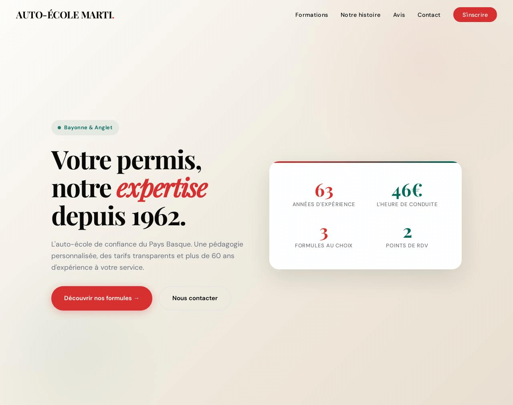

Sites web
Projets développés
Sites vitrines et applications web réalisés de la conception à la mise en ligne.

Auto-École Marti
Site vitrine pour l'auto-école familiale Marti. Présentation des offres de formation, des tarifs et des moyens de contact, dans un format clair et adapté aux mobiles.
Visiter le siteArticles & analyses
Notes techniques
Retours d'expérience, études de cas et guides pratiques autour de la donnée territoriale et du développement d'outils.
Automatiser la prospection de la Redevance Spéciale avec Power Query
Comment interroger les APIs publiques françaises depuis Excel pour constituer automatiquement la liste des entreprises assujetties à la RS sur un territoire intercommunal.
APIs open data utiles pour les données territoriales
Une sélection d'APIs publiques pour automatiser la collecte, structurer les référentiels géographiques et enrichir les analyses économiques locales.